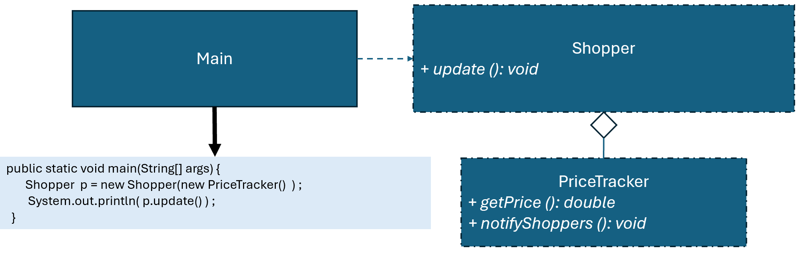

優點
缺點
總評
本次互動不僅多次展現疑問、比較與自我修正，且能深化對設計原則的理解、主動自省與推動AI深度對話，確認各種系統設計運作可能的取捨。整體論證能力、反思反饋與系統調節能力皆屬高水準，難得一見。唯測試驗證表現略弱，但不影響高主體性交互的整體判斷。
設計模式的角度來看，為什麼這裡選擇使用「拉取模式」而非將價格直接透過 update(double price) 傳入的「推送模式（Push Model）」？請針對這兩種做法的原理與步驟進行比較，並說明在目前的 Shopper 類別中，這種「回頭讀取」的作法對類別之間的**耦合度（Coupling）**有什麼具體影響？
若要達成註解中的預期輸出，PriceTracker 應增加什麼屬性？請給出修正後的 Shopper.display() 程式碼。
你目前的 display() 實作採用了硬編碼（Hardcoding）： System.out.println(... + " New Watermelon price:" + ...); 這顯然不是一個良好的設計。如果今天 PriceTracker 追蹤的是「Apple」，這段程式碼就會輸出錯誤資訊。我之前明確建議在 PriceTracker 加入 itemName 屬性，你卻選擇直接在字串中寫死 "Watermelon"。為什麼你選擇硬編碼而非動態屬性？這種作法在面對「多樣化商品」時，與「動態取得商品名稱」的做法相比，維護成本有何差異？
你的回覆存在邏輯缺陷：display() 使用硬編碼 "Watermelon"，這無法應對不同商品。請針對以下兩組方案提供 Java 實作與分析： 方案 A (具體依賴)：Shopper 內部持有 PriceTracker 參照。 方案 B (抽象拉取)：update(ISubject s)，Shopper 僅依賴介面，不持有具體主題。
import java.util.ArrayList;
interface ISubject {...}
...（程式碼節略）...自己的理解是，這段簡化程式比較像是「最小可運作版本」，用來確認 Observer 的基本流程：註冊、通知、更新。但真正的價值是在擴展後才看得出來，也就是當資料來源變多、觀察者變多時，仍然不需要改核心結構，只要持續「新增」物件就能完成需求。這也是為什麼最後會改寫成多個商品同時通知的版本，讓這種低耦合與高彈性的特性更清楚。!@#$
import java.util.ArrayList;
interface ISubject {...}
...（程式碼節略）...好不好
目前的 update(ISubject is) 雖然達成了拉取模式（Pull Model），但 ISubject 介面中定義了 getCommodity()。 反思：如果我要用同一個架構去觀察一個「股票市場（StockMarket）」類別，而股票只有代號（Symbol）沒有商品名（Commodity），目前的 ISubject 是否發生了「介面污染」？ 重構要求：請比較「使用 Java 泛型 IObserver」與「現有介面繼承」這兩種改寫方案的優劣，並說明哪一種更能達成真正的解耦。
關於你提到的 (int) currentPrice 轉型，我對其精確度有疑慮。
預測輸出：如果我在 Main 執行 watermelonTracker.setPrice(25.9)，根據 Java 的轉型規則，輸出的價格會是 25 還是 26？
深層反思：在價格追蹤系統中，這種「無條件捨去」的作法是否會造成嚴重的資訊落差？如果你建議修正，你會選擇改變介面的 getPrice() 回傳型態，還是只在 display() 端做格式化（如 String.format("%.2f")）？這兩種做法對系統的維護成本有何不同？
你提到這份程式符合 SOLID 原則，但我對 ISubject 介面中的 getCommodity() 感到困惑。 指出不確定性：如果我現在要實作一個 StockMarket（股票市場）也繼承 ISubject，它並沒有「商品名稱（Commodity）」，只有「股票代號（Symbol）」。 質疑與比較：為了讓 StockMarket 能跑，我是否被迫要在類別裡實作一個意義不明的 getCommodity() 方法？這是否違反了介面隔離原則（ISP）？ 重構提案：與其在介面寫死特定屬性，我們是否應該使用 Java 泛型 (Generics)，例如 interface IObserver？請分析泛型化後的架構在「處理多樣化資料」時，比起現有的介面繼承有什麼具體優勢？
如果我有 100 個觀察者，在 notifyShoppers() 遍歷清單的過程中，其中一個觀察者收到通知後立即呼叫了 removeObserver(this)（例如它只想收一次通知就退訂）。 問題：這是否會導致 java.util.ConcurrentModificationException？ 自我調節策略：如果會發生錯誤，你建議的修正步驟是什麼？是改用 CopyOnWriteArrayList，還是先複製一份清單再遍歷？請解釋這兩種做法在效能與執行緒安全上的權衡。
在你之前的回覆中，你稱讚這是一個「低耦合、高彈性」的範例。 挑戰：目前的 Shopper 仍然在 update 方法中依賴 ISubject.getCommodity() 這種非常具體的名稱。如果我今天把 ISubject 改成一個「完全沒有任何 Getter 方法」的標記介面（Marker Interface），我們還能實作「拉取模式」嗎？
import java.util.ArrayList;
interface ISubject {...}
...（程式碼節略）...自己的理解是，這段簡化程式比較像是「最小可運作版本」，用來確認 Observer 的基本流程：註冊、通知、更新。但真正的價值是在擴展後才看得出來，也就是當資料來源變多、觀察者變多時，仍然不需要改核心結構，只要持續「新增」物件就能完成需求。這也是為什麼最後會改寫成多個商品同時通知的版本，讓這種低耦合與高彈性的特性更清楚。!@#$
假設有許多購物者(Shopper)關注PriceTracker回報的西瓜架構。 
請檢視程式碼介面是否違反 Observer 模式，並撰寫報告，討論新設計有何優點?
下面是程式碼的UML圖
public class Main {
public static void main(String[] args) {
ISubject subject = new PriceTracker( );
IObserver obs = new Shopper ("Mary") ;
subject.registerObserver( obs ) ;
((PriceTracker)subject).setPrice(25);
//顯示 "Mary received update from PriceTracker. New Watermelon price:25"
subject.removeObserver( obs ) ;
}
}